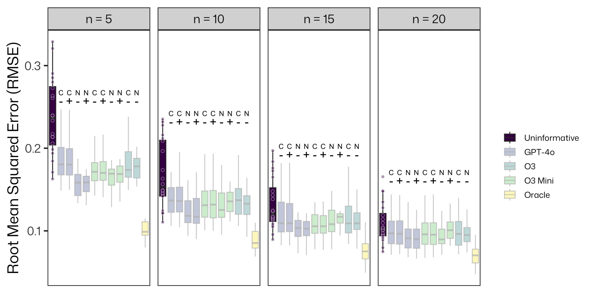

where \(d_j \in \{\text{increase, decrease, unchanged}\}\) is predicted direction, \(m_j \in \{\text{small, moderate, large}\}\) is predicted magnitude, \(c_j \in \left(0, 1\right)\) is confidence level, and \(r_j\) is a string representing the rationale.
Step 2: Map qualitative predictions to numerical priors
where \(y_{ij}\) is abundance for sample \(i\) and metabolite \(j\), \(x_i \in \{0,1\}\) is group indicator, \(\beta_j\) represents the natural log fold change (lnFC) for metabolite \(j\), and \(\epsilon\) is a small constant to avoid log(0).
Simulation Study
Empirical Monte-Carlo Subsampling
Ground Truth: Empirical natural log fold change (lnFC) from full MTBLS1 dataset1 (n=132)
where \(\hat{\beta}_j\) is the estimated effect size and \(\beta_j^{\text{true}}\) is the ground truth lnFC for metabolite \(m_j\).
LLM Informed estimators are finite-sample efficient

Summary
LLM Prior Elicitation Works: Automated biological knowledge extraction via LLMs produces informative priors for Bayesian metabolomics analysis.
Mapping Strategy Matters: Magnitude-driven effect sizes and confidence-calibrated uncertainties are crucial for translating qualitative LLM insights into effective numerical priors.
Added Context May Not Matter: Including biological context from the HMDB in LLM prompts did not significantly improve prior performance in this study.
Performance is Model Agnostic: Different LLMs (OpenAI, Google) yielded similar results, indicating robustness across models.
Practical Impact: Method particularly valuable for small sample studies (n=5-20) where traditional statistical approaches struggle with high-dimensional metabolomics data.
Future Directions: Integration of other databases, alongside more sophisticated mapping approaches and historical data.